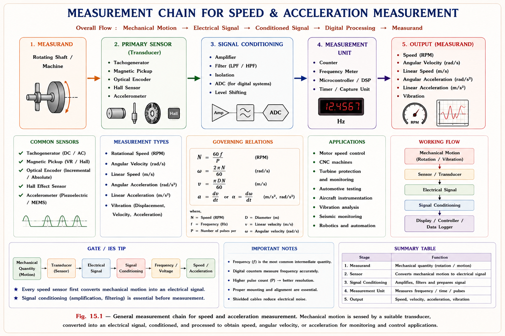
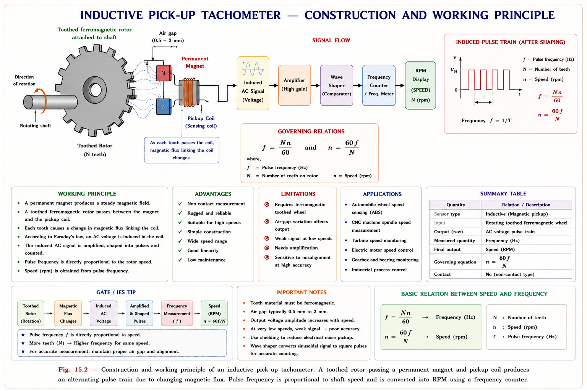
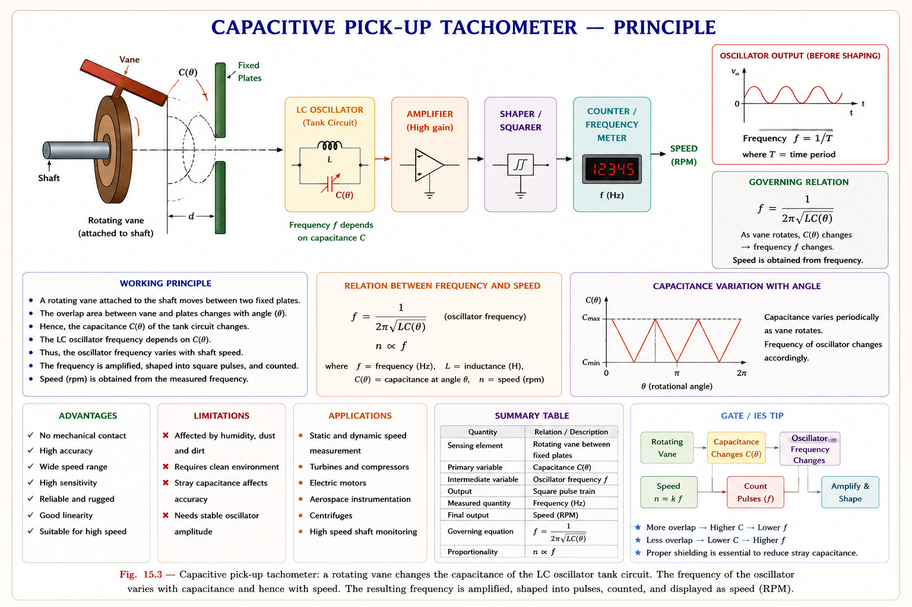
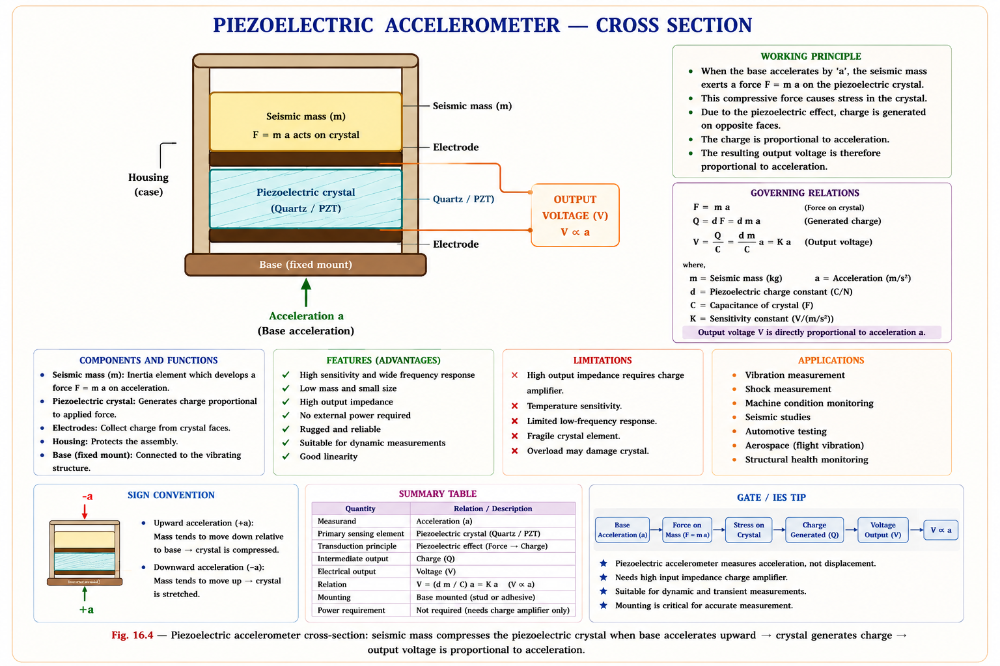
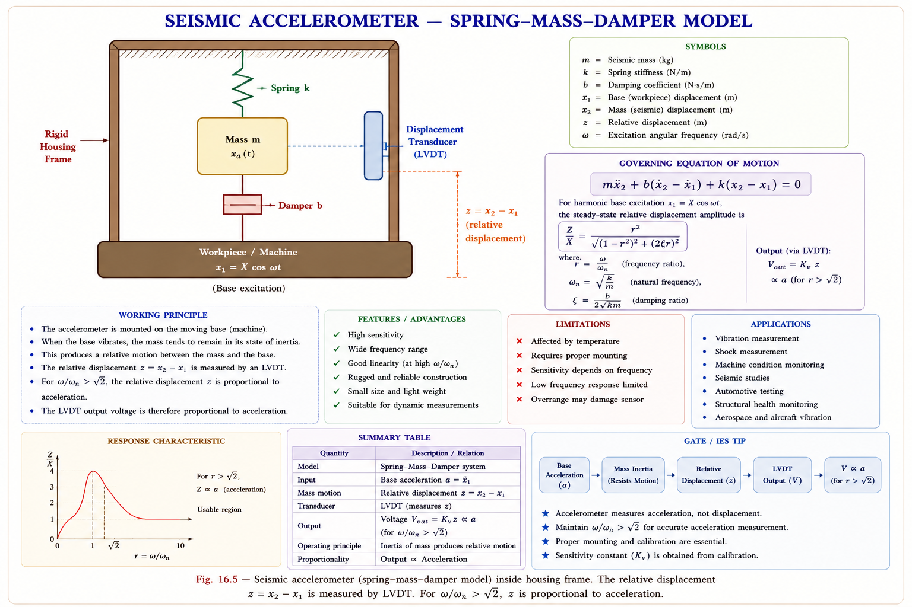

Comprehensive GATE & IES coverage of rotational velocity, acceleration, and vibration measurement — contactless tachometers, inductive & capacitive pick-ups, piezoelectric & seismic accelerometers, with full theory, SVG diagrams, and LaTeX equations derived from standard textbooks.
Every rotating machine — from a turbine in a thermal power station to the spindle of a CNC lathe — must be monitored continuously for speed and vibration. Too slow, and you lose efficiency; too fast, and you risk catastrophic mechanical failure. In electrical engineering, speed feedback is the backbone of closed-loop motor control, while vibration measurement is central to condition monitoring and predictive maintenance.
These quantities sit between primary quantities (displacement, force) and final electrical output. Velocity is the first derivative of displacement; acceleration is the second. The measurement chain is: mechanical motion → transducer → electrical signal → display/control. Understanding this chain is essential for GATE IN and EE students.

Rotational velocity (speed) is most commonly expressed in revolutions per minute (rpm) or radians per second (rad/s). The fundamental challenge is converting continuous rotary motion into a measurable electrical signal. The family of devices that accomplish this are called tachometers.[1]
| Type | Principle | Output | Contact? | Typical Range |
|---|---|---|---|---|
| DC Tachogenerator | EMF ∝ speed (Faraday's law) | DC voltage | Yes (brush) | 0 – 10,000 rpm |
| AC Tachogenerator | Frequency ∝ speed | AC voltage | Yes | 0 – 10,000 rpm |
| Inductive Pick-up | Reluctance change → pulse | Pulse train | No | Very wide |
| Capacitive Pick-up | Capacitance change → pulse | Pulse train | No | Very wide |
| Photo-electric | Light interruption → pulse | Pulse train | No | Any |
| Stroboscope | Flash frequency = speed | Visual/optical | No | 100–25,000 rpm |
Contact tachometers apply a small mechanical load to the shaft (friction), which can alter the very speed being measured. Contactless types (inductive, capacitive, photoelectric) eliminate this error completely — a major advantage in precision metrology and high-speed machinery. GATE frequently tests this concept.
The inductive pick-up tachometer is the most widely used contactless speed sensor in industrial practice. Its principle exploits the change in magnetic reluctance caused by the passing teeth of a ferromagnetic toothed rotor.[1][2]
The sensor consists of a small permanent magnet wound with a sensing coil. This assembly is positioned close to — but not touching — a toothed ferromagnetic wheel (rotor) mounted on the shaft whose speed is to be measured.
As the shaft rotates, the teeth alternately pass in front of the pick-up head. When a tooth is aligned with the magnet, the air gap is minimum and the magnetic flux through the coil is maximum. As the tooth moves away, the air gap increases and flux decreases. This cyclical change in flux induces a voltage in the coil according to Faraday's law:
where \(N\) = number of turns, \(\Phi\) = instantaneous magnetic flux (Wb)
The result is a sinusoidal-like pulse train whose frequency is directly proportional to both the number of teeth and the rotational speed. After amplification and pulse shaping (squaring), the pulses are fed to a frequency counter or timer/counter unit.

Let the toothed rotor have T teeth and rotate at N revolutions per second. Then in one second, the number of pulses generated equals:
Since \(N\) is in rev/s, the speed in rpm is \(N_{\text{rpm}} = 60 N\). If the frequency meter measures \(f\) pulses per second, then:
where \(f\) = measured pulse frequency (Hz = pulses/second), \(T\) = number of teeth on rotor
If the rotor has exactly 60 teeth and the counter counts pulses over exactly 1 second, then the counter display directly reads speed in rpm. This is a popular instrument design choice and a classic GATE conceptual question.
The accuracy of the inductive pick-up tachometer depends on the accuracy of the frequency counter and the stability of the timing gate. If the frequency meter has an accuracy of ±Δf Hz, the corresponding speed error is:
For example, with T = 60 teeth and a frequency meter accuracy of ±5 Hz, the speed error is ±5 rpm. This is an important exam concept — the error in speed measurement scales inversely with the number of teeth. More teeth → better resolution and smaller error.[1]
Teeth × Angular velocity = Pulse frequency. Think of each tooth "tapping" the sensor as it passes — total taps per second = f. Speed = (total taps ÷ teeth per revolution) × 60.
To deeply understand inductive pick-up tachometers, we must examine the magnetic circuit formed by the permanent magnet, coil, air gap, and toothed rotor. The key concept is reluctance — the magnetic analogue of electrical resistance.
\(l\) = length of magnetic path (m), \(A\) = cross-sectional area (m²), \(\mu_0 = 4\pi \times 10^{-7}\) H/m, \(\mu_r\) = relative permeability
When a tooth aligns with the pick-up, the air gap \(l_g\) is minimum → \(\mathcal{R}\) is minimum → flux \(\Phi\) is maximum. Between teeth, \(l_g\) is maximum → \(\mathcal{R}\) is maximum → \(\Phi\) is minimum. Since \(\Phi = \mathcal{F}/\mathcal{R}\) (where \(\mathcal{F} = NI\) is the magnetomotive force):
\(\theta\) = angular position of rotor (rad), \(T\) = number of teeth. This is an approximation assuming sinusoidal variation.
The induced EMF in the coil of Nc turns is:
\(\omega\) = angular velocity of shaft (rad/s), \(T\omega\) = angular frequency of the induced EMF. Note: EMF amplitude ∝ ω (speed).
In the inductive pick-up tachometer, both the amplitude and frequency of the induced EMF increase with speed. This is different from a photoelectric sensor where only frequency changes. At very low speeds, the amplitude may be too small for reliable detection — this defines the minimum speed threshold of the device.
The capacitive pick-up tachometer operates on the principle that a rotating vane passing between fixed capacitor plates causes a periodic change in capacitance, which is converted to a frequency signal proportional to shaft speed.[1][3]
A metallic or dielectric vane is attached to the rotating shaft. As it rotates, the vane periodically passes between two fixed parallel plates, altering the effective area of the capacitor. The capacitor forms part of an LC oscillator tank circuit, and the change in capacitance shifts the oscillator frequency. This frequency shift — occurring periodically with each pass of the vane — is sensed, amplified, shaped, and counted.

As vane enters: \(C\) increases → \(f_{\text{osc}}\) decreases. As vane exits: \(C\) decreases → \(f_{\text{osc}}\) increases. The modulation rate of this frequency equals the vane pass rate, which is proportional to shaft speed.
Acceleration is defined as the rate of change of velocity with respect to time: \(a = dv/dt = d^2x/dt^2\). In engineering, we measure acceleration for two main purposes: vibration analysis and inertial navigation. Devices that measure acceleration are called accelerometers.[1][4]
Newton's second law provides the physical foundation: for a seismic mass \(m\), a force \(F = ma\) acts on it when the system accelerates. If we can measure this force — or the displacement it produces — we can deduce the acceleration. This is the operational principle of all accelerometers.
The two main categories in GATE/IES syllabus are: (1) Piezoelectric accelerometers — use the piezoelectric effect of crystals to generate charge proportional to applied force; and (2) Seismic (displacement) accelerometers — measure the displacement of a seismic mass against a spring and damper system. Piezoelectric types are preferred for high-frequency vibration; seismic types suit low-frequency applications.
The piezoelectric accelerometer is among the most widely used vibration sensors in engineering. It exploits the direct piezoelectric effect — certain crystalline materials (quartz, barium titanate, PZT) generate an electric charge when mechanically stressed.[1][4]
The device consists of a piezoelectric crystal disc sandwiched between two electrodes. A seismic mass (proof mass) is placed on top of the crystal assembly, and the whole unit is enclosed in a protective metal housing. The base of the sensor is rigidly bolted to the machine or structure whose acceleration is to be measured.

When the base (attached to the vibrating machine) accelerates upward with acceleration \(a\), Newton's second law requires a force \(F = ma\) to act on the seismic mass. This force compresses (or stretches) the piezoelectric crystal. By the direct piezoelectric effect, the crystal generates an electric charge \(Q\) proportional to the applied force:
\(d_{33}\) = piezoelectric charge constant (C/N) — a material property, \(m\) = seismic mass (kg), \(a\) = acceleration (m/s²)
The crystal acts as a capacitor \(C_p\). The open-circuit voltage across the electrodes is:
Since \(d_{33}\), \(m\), and \(C_p\) are constants for a given sensor, \(V_{\text{out}} \propto a\). This makes the output directly proportional to acceleration — the fundamental measurement principle.
From \(F = ma\): when acceleration is upward, inertial reaction force on mass is downward, compressing the crystal → stress increases → charge increases → voltage increases. When acceleration is downward, mass tends to lift off → crystal is relieved of stress → voltage decreases. This explains why acceleration in both directions produces measurable output.
The frequency response of a piezoelectric accelerometer spans from approximately 10 Hz to 50 kHz, making it ideal for high-frequency vibration measurement. The lower frequency limit is set by the charge amplifier's time constant; the upper limit by the sensor's resonant frequency.
| Parameter | Typical Value | Engineering Significance |
|---|---|---|
| Frequency range | 10 Hz – 50 kHz | Wide — covers most mechanical vibrations |
| Sensitivity | 10 – 100 mV/g | Where g = 9.807 m/s² |
| Measurable range | Fraction of g to 1000g | Very large dynamic range |
| Output impedance | High | Requires charge amplifier (high Zin) |
| Temperature sensitivity | Moderate | Subject to pyroelectric effect changes |
| Hysteresis error | Present | Due to crystal domain effects |
The seismic accelerometer converts acceleration into a measurable relative displacement of a seismic mass mounted within a spring-mass-damper system. Unlike the piezoelectric type, it can measure static or slowly varying acceleration (including steady-state gravitational field).[1][4]
The device consists of a seismic mass \(m\) suspended by a spring of stiffness \(k\) and a damper with damping coefficient \(b\). The housing (frame) is rigidly attached to the vibrating structure. An internal displacement transducer (LVDT, potentiometer, or capacitive) measures the relative motion between the mass and frame.

Let \(x_1(t)\) be the absolute displacement of the housing (attached to vibrating machine) and \(x_2(t)\) be the absolute displacement of the seismic mass. Define the relative displacement:
Substituting \(z = x_2 - x_1\) (relative displacement) and rearranging:
The right-hand side is the inertial excitation force. Note: the mass is "driven" by the negative of the base acceleration.
For sinusoidal base motion \(x_1 = X_0 \sin(\omega t)\), steady-state solution gives:
where \(\omega_n = \sqrt{k/m}\) = natural frequency, \(\zeta = b/(2\sqrt{km})\) = damping ratio
For \(\omega \ll \omega_n\) (exciting frequency much less than natural frequency), the above expression simplifies to:
\(Z \approx \dfrac{X_0 \omega^2}{\omega_n^2} = \dfrac{a}{\omega_n^2} = \dfrac{a \cdot m}{k}\)
Therefore \(z = a/\omega_n^2\) — the relative displacement is directly proportional to acceleration. This is the accelerometer operating regime. To measure acceleration accurately, the natural frequency must be much higher than the vibration frequencies of interest.
| Condition | \(\omega\) vs \(\omega_n\) | z proportional to | Device type |
|---|---|---|---|
| Accelerometer mode | \(\omega \ll \omega_n\) | Acceleration \(a = \ddot{x}_1\) | Accelerometer |
| Vibrometer mode | \(\omega \gg \omega_n\) | Displacement \(x_1\) | Seismic Vibrometer |
| Velometer mode | \(\omega \approx \omega_n\) with \(\zeta = 0.5\) | Velocity \(\dot{x}_1\) | Velocity pick-up |
A toothed-rotor inductive pick-up tachometer has a rotor with 120 teeth. The frequency counter registers 3600 pulses per second. What is the rotational speed in rpm?
Solution: \(N_{\text{rpm}} = \dfrac{f \times 60}{T} = \dfrac{3600 \times 60}{120} = \dfrac{216000}{120} = 1800\) rpm.
Key concept: Always use \(N_{\text{rpm}} = (f \times 60)/T\). Do not confuse \(f\) (pulses/second) with rpm directly.
Which of the following is NOT a characteristic of a piezoelectric accelerometer?
Solution: Piezoelectric sensors are dynamic sensors — they respond to changing forces only. A static force produces a constant charge which leaks away through the finite resistance of the crystal and amplifier. Therefore, piezoelectric accelerometers cannot measure static (DC) acceleration. This is a fundamental and frequently-tested limitation.
The main advantage of a contactless electrical tachometer over a contact-type tachometer is:
Solution: The absence of mechanical contact means no friction load is imposed on the shaft. This is critical in precision speed measurement where even a tiny torque load would change the speed. For high-speed machines and servo systems, contactless measurement is mandatory for accuracy.
A seismic instrument with natural frequency \(\omega_n\) is used as an accelerometer. The condition that must be satisfied is:
Solution: When \(\omega \ll \omega_n\), the relative displacement \(z \approx a/\omega_n^2 \propto a\). The instrument measures acceleration. When \(\omega \gg \omega_n\), \(z \approx x_1\) — it becomes a vibrometer. The accelerometer regime requires a stiff spring (high \(\omega_n\)) to keep the operating frequencies well below resonance.
🟢 High Probability: Speed calculation from toothed rotor (\(N = f \times 60 / T\)); Special case T=60 (counter reads rpm directly); Contactless = no load on machine; Piezoelectric \(V \propto a\); Q = d₃₃ × F; Cannot measure DC acceleration.
🟡 Medium Probability: Capacitive pick-up tachometer principle; Seismic accelerometer transfer function; \(\omega \ll \omega_n\) for accelerometer operation; Comparison of piezoelectric vs seismic types.
🔴 Lower Probability: Detailed reluctance derivation; Full mathematical model of seismic system; Oscillator circuit details of capacitive tachometer.
\(f = T \times N\) (Hz) | \(N_{\rm rpm} = \frac{f \times 60}{T}\) | If T=60: \(N_{\rm rpm} = f\) | Error: \(\Delta N = \frac{\Delta f \times 60}{T}\) | EMF amplitude ∝ speed
No mechanical load on shaft → no friction error. Inductive: reluctance change → EMF. Capacitive: capacitance change → frequency shift in LC oscillator. Both use amplifier + shaper + counter.
\(Q = d_{33} \cdot F = d_{33} \cdot m \cdot a\) | \(V = Q/C_p\) | \(V \propto a\) | Range: 10 Hz – 50 kHz | Sensitivity: 10–100 mV/g | Cannot measure DC (static) acceleration
\(m\ddot{z} + b\dot{z} + kz = -ma(t)\) | Accelerometer: \(\omega \ll \omega_n\), then \(z \propto a\) | Vibrometer: \(\omega \gg \omega_n\), \(z \propto x_1\) | Measures DC acceleration ✓
\(\omega_n = \sqrt{k/m}\) | Damping ratio \(\zeta = b/(2\sqrt{km})\) | Optimal damping for flat response: \(\zeta \approx 0.6\)–0.7 | High \(\omega_n\) → wider accelerometer frequency range
"TAP": Teeth × Angular velocity = Pulses. "SPICE": Seismic → Position (z) → Inertial → Current → Estimate acceleration. Piezo: Crystal Charges when Compressed (CCC).
Ask any question about Chapter 6 — speed measurement, accelerometers, GATE problems, or derivations.
Temperature Measurement — Resistance Temperature Detectors (RTDs), thermistors, thermocouples (Seebeck, Peltier, Thomson effects), radiation pyrometers, and optical temperature sensors with full GATE & IES coverage and derivations.
All technical content is derived from the following standard textbooks. All explanations, derivations, diagrams, and SVG figures are original to Aarova AI.